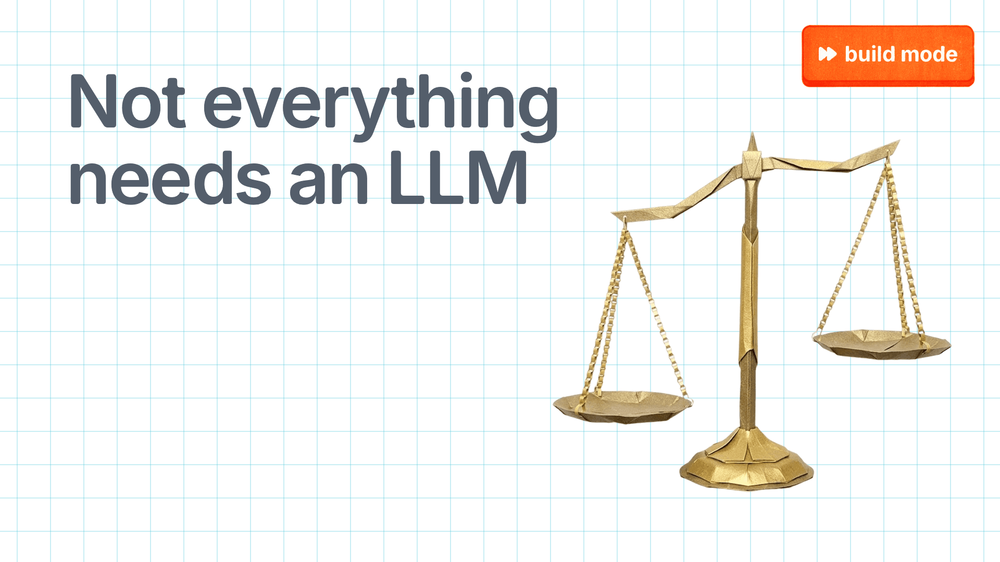
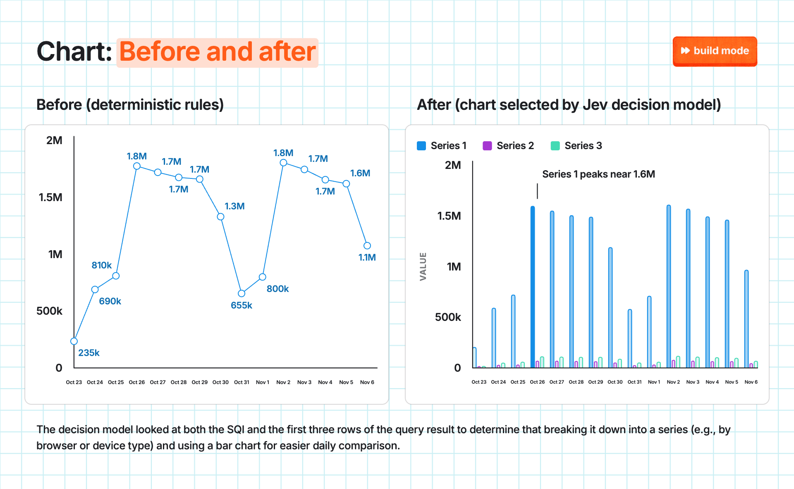

Không phải lúc nào cũng cần LLM
Ba chế độ đọc: dùng 3 nút tròn ở góc dưới bên phải để chuyển nhanh (trên điện thoại, ba nút nằm thành một thanh ở cuối màn hình để không đè chữ bên phải). VI — bản dịch tiếng Việt đầy đủ, theo từng đoạn. EN — nguyên văn tiếng Anh, không tách cụm. Cụm (mặc định, biểu tượng A gạch dưới) — tiếng Anh tách thành các cụm theo mệnh đề; rê chuột hoặc chạm vào một cụm để xem nghĩa tiếng Việt. Chạm lần nữa hoặc chạm ra ngoài để đóng; với cụm chứa liên kết, trên điện thoại chạm lần đầu để xem nghĩa, chạm lần hai để mở liên kết. Chế độ được ghi nhớ trên máy này; có thể mở thẳng bằng ?mode=vi, ?mode=en hoặc ?mode=chunk. Ở chế độ Cụm, ô “Gạch chân nhẹ các cụm” vẫn dùng được. Bản gốc là bài “Not everything needs an LLM” của Jina Yoon (PostHog); bản dịch phục vụ học tập phi thương mại.

TL;DR
- Mô hình ra quyết định như Jev trả lời có kiểu, kèm xác suất. Nếu đã hiệu chỉnh, điểm 0.8 nghĩa là đúng khoảng 80% lần; 0.5 thì như tung đồng xu. LLM thì trả lời thành đoạn văn, thường tự tin thái quá.
- Dùng chúng để chặn lời gọi LLM đắt: Replay Vision hỏi hai câu yes/no hẹp (“có nêu tên người thật không?”, “có hiện chi tiết liên hệ hoặc giấy tờ không?”). Nếu một trong hai câu đạt từ 0.4 trở lên thì Gemini viết lại; nếu không thì cho qua. Trên production, 98.7% bản tóm tắt bỏ qua hoàn toàn lời gọi LLM.
- Đặt ngưỡng theo lỗi nào đắt hơn. Với PII, bỏ sót (lưu dữ liệu cá nhân như thể đã sạch) đắt hơn gọi thêm một lần LLM, nên ngưỡng thấp 0.4. Bot Slack dùng 0.85+ trên hai lần kiểm tra vì trả lời khi không được hỏi còn phiền hơn.
- Dùng một câu hỏi
choiceđể chọn mô hình rẻ nhất có khả năng làm đúng ngay lần đầu. Ngưỡng không chuyển được giữa việc, mô hình, nhà cung cấp, thậm chí giữa v1 và v2 của cùng một mô hình; hãy để cấu hình được theo từng dự án và hiệu chỉnh lại khi chạy song song trên dữ liệu gắn nhãn thủ công. - Chỉ hỏi những gì đang hiện ra trước mặt. Việc xếp hạng “vướng mắc khi onboarding” được làm thành hai bước: embedding lấy danh sách gần, rồi mô hình hỏi “bản tóm tắt này có khớp tìm kiếm không?”. Trên 20 truy vấn thử, chất lượng xếp hạng tăng khoảng 25%.
- Đừng xâu nhiều bước suy luận: tác vụ Highlights từng gửi tới 32 phiên, 12–38k token mỗi lần, làm tắc máy chủ mô hình hàng giờ. Việc mở, cần ngữ cảnh dài hoặc nhiều bước thì vẫn để LLM, hoặc mô hình lai như Jeeves (mặc định của PostHog khi không chỉ định mô hình).
LLM rất thích nói dài. Hỏi một câu đơn giản thì nhận về vài trăm chữ “tùy trường hợp”. Thật sự rất phiền.
LLMs love to yap. Ask a simple question and you get a few hundred words of “it depends.” It’s annoying as hell.
LLMs love to yap. Ask a simple question and you get a few hundred words of “it depends.” It’s annoying as hell.
Đó là lý do chúng tôi thích dùng mô hình ra quyết định như Jev cho những tác vụ đơn giản hơn. Bạn đặt một câu hỏi có cấu trúc và nhận về câu trả lời định kiểu sẵn, kèm xác suất, đại khái như thế này:
This is why we love decision models like Jev for simpler tasks. You ask a structured question and get a typed answer with a probability, which looks something like this:
This is why we love decision models like Jev for simpler tasks. You ask a structured question and get a typed answer with a probability, which looks something like this:
- Noul. Nhím có phải động vật có vú không? → Có, 0.99Noul. Are hedgehogs mammals? → Yes, 0.99Noul. Are hedgehogs mammals? → Yes, 0.99
- Choice. Nhím thuộc họ động vật nào? → Động vật có vú, 0.99Choice. Which animal family do hedgehogs belong to? → Mammal, 0.99Choice. Which animal family do hedgehogs belong to? → Mammal, 0.99
- Score. Tình trạng bảo tồn hiện nay của nhím là gì? → Ít lo ngại, 0.77Score. What is the current conservation status of hedgehogs? → Least Concern, 0.77Score. What is the current conservation status of hedgehogs? → Least Concern, 0.77
Trong khi LLM trả về đoạn văn tự do và thường tự tin thái quá, mô hình ra quyết định thể hiện rõ mức độ không chắc chắn của nó. Với mô hình đã hiệu chỉnh, câu trả lời đạt 0.8 nghĩa là đúng khoảng 80% số lần; còn điểm 0.5 thì chẳng khác nào tung đồng xu.
Whereas LLMs return free-form and overly confident prose, decision models make model uncertainty explicit. In a calibrated model, answers that score 0.8 are right about 80% of the time. That means a score of 0.5 is a coin flip.
Whereas LLMs return free-form and overly confident prose, decision models make model uncertainty explicit. In a calibrated model, answers that score 0.8 are right about 80% of the time. That means a score of 0.5 is a coin flip.
Chúng tôi đã thử nghiệm chúng tại PostHog và một số ứng dụng thực tế đã lên production. Dưới đây là tất cả những gì chúng tôi đúc kết được cho tới nay: khi nào nên dùng, dùng ra sao, và những sai lầm cần tránh.
We’ve been experimenting with them at PostHog and several use cases have made it to production. This is everything we’ve learned about using decision models so far: when to use them, how to use them, and mistakes to avoid.
We’ve been experimenting with them at PostHog and several use cases have made it to production. This is everything we’ve learned about using decision models so far: when to use them, how to use them, and mistakes to avoid.
1. Dùng chúng để chặn lời gọi LLM đắt
1. Use them to gate expensive LLM calls
1. Use them to gate expensive LLM calls
Mô hình ra quyết định rẻ hơn tới 444.6 lần và nhanh hơn tới 193.6 lần so với mô hình frontier,1 nên bạn có thể dùng chúng để kiểm tra xem liệu có thực sự cần gọi LLM đắt tiền hay không.
Decision models are up to 444.6x cheaper and 193.6x faster than frontier models,1 so you can use them to check whether you even need to make an expensive LLM call at all.
Decision models are up to 444.6x cheaper and 193.6x faster than frontier models,1 so you can use them to check whether you even need to make an expensive LLM call at all.
Chúng tôi áp dụng cách này trong pipeline lọc thông tin cá nhân ở Replay Vision — sản phẩm tự xem và tóm tắt bản ghi phiên làm việc của người dùng. Quy trình hoạt động như sau:
We do this in a pipeline that scrubs personal info in Replay Vision, our product that watches and summarizes user session recordings for you. Here’s how it works:
We do this in a pipeline that scrubs personal info in Replay Vision, our product that watches and summarizes user session recordings for you. Here’s how it works:
- Mỗi bản tóm tắt phiên đi qua 2 câu hỏi có/không của một mô hình ra quyết định. Đặt câu hỏi hẹp như vậy giúp giảm cảnh báo nhầm xuống còn khoảng một phần mười so với khi chỉ hỏi một câu. “Bản này có nhắc tên người thật nào không?” “Bản này có hiển thị chi tiết liên hệ hoặc giấy tờ tùy thân không?”Each session summary goes through 2 yes/no questions from a decision model. Using narrow questions like this cuts false flags to about a tenth of what a single question produced. “Does this name a real person?” “Does this show contact details or an ID?”Each session summary goes through 2 yes/no questions from a decision model. Using narrow questions like this cuts false flags to about a tenth of what a single question produced. “Does this name a real person?” “Does this show contact details or an ID?”
- Nếu một trong hai câu đạt từ 0.4 trở lên, Gemini sẽ viết lại bản tóm tắt, loại bỏ thông tin cá nhân, rồi bản đó được kiểm tra lại.If either scores 0.4 or above, Gemini rewrites the summary without the personal info and it gets checked again.If either scores 0.4 or above, Gemini rewrites the summary without the personal info and it gets checked again.
- Nếu không, bản tóm tắt được xem là sạch và đi qua cổng. Trên production, 98.7% trường hợp bỏ qua hoàn toàn lời gọi LLM.Otherwise, it’s clean and passes through the gate. In production, 98.7% skip the LLM call entirely.Otherwise, it’s clean and passes through the gate. In production, 98.7% skip the LLM call entirely.

Nếu không có mô hình ra quyết định, chúng tôi sẽ cứ phải loay hoay chỉnh prompt và regex mà vẫn bỏ sót, hoặc phải gửi mọi bản tóm tắt cho Gemini chỉ để bắt đúng khoảng 1% trường hợp thực sự cần xử lý.
Without the decision model, we’d have to keep fussing with prompts and regexes that miss things, or sending every summary to Gemini to catch the 1% that need it.
Without the decision model, we’d have to keep fussing with prompts and regexes that miss things, or sending every summary to Gemini to catch the 1% that need it.
Nhưng hãy nhớ là chúng vẫn sai
But remember they make mistakes
But remember they make mistakes
Điểm xác suất 0.85 vẫn đồng nghĩa có khoảng 150 câu trả lời sai trên 1.000 lần kiểm tra, nên hãy tính trước cho cả dương tính giả và âm tính giả.
A probability score of 0.85 still means ~150 wrong answers per 1,000 checks, so plan ahead for false positives and false negatives.
A probability score of 0.85 still means ~150 wrong answers per 1,000 checks, so plan ahead for false positives and false negatives.
Trong ví dụ PII, dương tính giả chỉ làm tốn thêm một lời gọi LLM, còn âm tính giả lại lưu nhầm dữ liệu cá nhân như thể đã sạch. Vì thế chúng tôi đặt ngưỡng thấp ở mức 0.4.
In the PII example, a false positive only costs us an extra LLM call, whereas a false negative stores personal data as clean. That’s why we set the threshold low at 0.4.
In the PII example, a false positive only costs us an extra LLM call, whereas a false negative stores personal data as clean. That’s why we set the threshold low at 0.4.
Khi dương tính giả mới là lỗi đắt đỏ hơn, hãy đặt ngưỡng cao hơn. Ví dụ, chúng tôi mới cập nhật bot PostHog trên Slack để nó tự trả lời câu hỏi mà không cần bị tag. Để tránh gây phiền nhiễu, bot kiểm tra mọi tin nhắn trong kênh xem (1) tin đó có đang hỏi thông tin không, và (2) PostHog có trả lời được không. Chỉ những tin đạt cả hai mức từ 0.85 trở lên mới được đi tiếp.
When false positives are the costlier mistake, use higher thresholds. For example, we recently updated the PostHog in Slack bot, so it can answer questions without being tagged. To avoid being annoying, it checks every message in a channel to see (1) whether it’s asking for information, and (2) whether PostHog could answer it. Only messages that pass both at 0.85+ go through.
When false positives are the costlier mistake, use higher thresholds. For example, we recently updated the PostHog in Slack bot, so it can answer questions without being tagged. To avoid being annoying, it checks every message in a channel to see (1) whether it’s asking for information, and (2) whether PostHog could answer it. Only messages that pass both at 0.85+ go through.
Điểm rút ra: Dùng mô hình ra quyết định để lọc công việc trước khi chúng chạm tới lời gọi LLM đắt tiền, và đặt ngưỡng dựa trên loại lỗi nào gây tốn kém cho bạn nhiều hơn.
Takeaway: Use decision models to filter jobs before they hit an expensive LLM call, and set the threshold based on which mistake costs you more.
Takeaway: Use decision models to filter jobs before they hit an expensive LLM call, and set the threshold based on which mistake costs you more.
2. Dùng chúng làm bộ định tuyến mô hình
2. Use them as model routers
2. Use them as model routers
Bot PostHog trên Slack cũng dùng một mô hình ra quyết định đóng vai bộ định tuyến (router) mô hình.
Our PostHog in Slack bot also uses a decision model as a model router.
Our PostHog in Slack bot also uses a decision model as a model router.
Khi bot được tag, trước hết nó kiểm tra xem tin nhắn có chỉ định mô hình cụ thể nào không. Nếu không, một câu hỏi choice sẽ chọn từ danh sách:
When the bot gets tagged, it first checks whether the message asked for a specific model. If not, one choice question picks from the list:
When the bot gets tagged, it first checks whether the message asked for a specific model. If not, one choice question picks from the list:
Hãy chọn phương án rẻ nhất mà nhiều khả năng sẽ hoàn thành tác vụ đúng ngay lần đầu. Một lần chạy thất bại tốn kém hơn một lựa chọn thông minh hơn.
Pick the cheapest option that will most likely finish the task correctly on the first try. A failed run costs more than a smarter option.
Pick the cheapest option that will most likely finish the task correctly on the first try. A failed run costs more than a smarter option.
Mỗi lựa chọn trong danh sách kèm theo một ghi chú ngắn mô tả điểm mạnh của mô hình đó. Chẳng hạn GPT Luna được mô tả là “một mô hình nhẹ và rất rẻ. Phù hợp câu trả lời ngắn, tra cứu, tóm tắt và sửa đổi rất nhỏ.” Mô hình ra quyết định sau đó chấm điểm yêu cầu dựa trên phần mô tả của từng lựa chọn.
Each option in the list carries a short note on what that model is good for. GPT Luna is described as “a light and very cheap model. Good for short answers, lookups, summaries and very small edits.” The decision model then scores the request against each option’s text.
Each option in the list carries a short note on what that model is good for. GPT Luna is described as “a light and very cheap model. Good for short answers, lookups, summaries and very small edits.” The decision model then scores the request against each option’s text.

Đừng cho rằng chúng thay thế được lẫn nhau
But don’t assume they’re interchangeable
But don’t assume they’re interchangeable
Từng tác vụ, từng mô hình và từng nhà cung cấp đều có ngưỡng khác nhau.
Different tasks, models, and providers all have different thresholds.
Different tasks, models, and providers all have different thresholds.
Khi thử nghiệm dùng chúng để tự động gộp các log giống nhau trong Error Tracking, chúng tôi phát hiện ngưỡng thay đổi ngay cả giữa bản v1 và v2 của cùng một mô hình. Chúng tôi phải thiết kế để cấu hình được ngưỡng theo từng dự án PostHog, và giữ bộ phán xét chạy song song (shadow mode) trong lúc hiệu chỉnh lại trên dữ liệu gắn nhãn thủ công.
We were experimenting with using them to auto-merge similar logs in Error Tracking and found that thresholds changed between v1 and v2 of the same model. We had to make its thresholds configurable per PostHog project and keep the judge in shadow mode while recalibrating based on hand-labeled data.
We were experimenting with using them to auto-merge similar logs in Error Tracking and found that thresholds changed between v1 and v2 of the same model. We had to make its thresholds configurable per PostHog project and keep the judge in shadow mode while recalibrating based on hand-labeled data.
Đây là một lý do khiến Fernando ở đội tăng trưởng thúc đẩy sớm một giao diện không phụ thuộc mô hình. Hiện chúng tôi đã có một cổng AI nội bộ để hoán đổi và thử nghiệm mô hình, kể cả các mô hình tự triển khai (self-hosted).
This is one of the reasons why Fernando on our growth team pushed for a model-agnostic interface early. We now have an internal AI gateway for swapping and testing models, including self-hosted ones.
This is one of the reasons why Fernando on our growth team pushed for a model-agnostic interface early. We now have an internal AI gateway for swapping and testing models, including self-hosted ones.
Điểm rút ra: Dùng một câu hỏi
choiceđể định tuyến yêu cầu LLM tự do tới mô hình rẻ nhất xử lý được. Hãy nhớ ngưỡng không thể mang sang chỗ khác, nên cần đặt riêng cho từng tác vụ và từng mô hình.Takeaway: Use a
choicequestion to route free-form LLM requests to the cheapest model that can handle it. Keep in mind that thresholds don’t carry over, so set them per task and per model.Takeaway: Use a
choicequestion to route free-form LLM requests to the cheapest model that can handle it. Keep in mind that thresholds don’t carry over, so set them per task and per model.
3. Dùng chúng để kiểm tra đúng những gì đang hiện ra
3. Use them for face-value checks
3. Use them for face-value checks
Nếu câu hỏi đòi hỏi thêm ngữ cảnh hoặc chuỗi suy luận dài, tốt hơn hết là dùng LLM. Dù vậy, bạn vẫn dùng được mô hình ra quyết định nếu có cách làm phẳng hoặc tiền xử lý đầu vào để có thể kiểm tra trực diện ngay những gì đang hiện ra trước mặt.
If a question requires more context or chains of reasoning, it’s better to use an LLM. However, you can still use a decision model if you have a way to flatten, or pre-process the input, so it’s checkable at face-value.
If a question requires more context or chains of reasoning, it’s better to use an LLM. However, you can still use a decision model if you have a way to flatten, or pre-process the input, so it’s checkable at face-value.
Trong Replay Vision, khi người dùng tìm một chủ đề như “vướng mắc khi onboarding”, truy vấn vẫn có khả năng trả về vài kết quả ngoài ý muốn do cách hoạt động của khoảng cách embedding.
In Replay Vision, when a user searches for a theme like “onboarding friction,” there’s a chance for the query to return a few unexpected results because of the way embedding distance works.
In Replay Vision, when a user searches for a theme like “onboarding friction,” there’s a chance for the query to return a few unexpected results because of the way embedding distance works.
Một mô hình ra quyết định không thể làm nổi việc “Xếp hạng 10 phiên hàng đầu có bản tóm tắt khớp với truy vấn tìm kiếm của người dùng.” Việc đó quá phức tạp.
A decision model can’t “Rank the top 10 sessions that contain summaries that match the user’s search query.” It’s too complicated.
A decision model can’t “Rank the top 10 sessions that contain summaries that match the user’s search query.” It’s too complicated.
Thay vào đó, chúng tôi dùng embedding trước để rút ra danh sách các bản ghi phiên ban đầu, rồi mới chuyển sang mô hình ra quyết định. Nhiệm vụ còn lại của mô hình chỉ là đánh giá xem từng kết quả trong danh sách khớp với từ khóa tìm kiếm gốc của người dùng tới mức nào:
Instead, we use the embeddings first to derive an initial list of session recordings to pass to the decision model. Then, the only task left for the decision model is to look at how closely each result in the list matches the user’s original search term:
Instead, we use the embeddings first to derive an initial list of session recordings to pass to the decision model. Then, the only task left for the decision model is to look at how closely each result in the list matches the user’s original search term:
Bản tóm tắt này có mô tả một phiên khớp với điều mà tìm kiếm đang hướng tới không?
Does this summary describe a session that matches what the search looks for?
Does this summary describe a session that matches what the search looks for?
Kết quả sau đó được xếp hạng lại theo xác suất đó. Trên 20 truy vấn thử nghiệm, cách này giúp cải thiện chất lượng xếp hạng khoảng 25%.
Results are then reranked by that probability. On 20 test queries, this improved ranking quality by about 25%.
Results are then reranked by that probability. On 20 test queries, this improved ranking quality by about 25%.

Nhưng hãy tránh suy luận nhiều bước
But avoid multi-step reasoning
But avoid multi-step reasoning
Trước đây chúng tôi từng thử dùng mô hình ra quyết định cho suy luận nhiều bước. Khi embedding chưa sẵn sàng trong Replay Vision, chúng tôi thử xếp một nguồn “Highlights” gồm những phiên đáng để con người xem. Các câu hỏi là:
We’ve tried using a decision model for multi-step reasoning before. Before embeddings were ready in Replay Vision, we tried ranking a “Highlights” feed of sessions worth a human’s time. The questions were:
We’ve tried using a decision model for multi-step reasoning before. Before embeddings were ready in Replay Vision, we tried ranking a “Highlights” feed of sessions worth a human’s time. The questions were:
- Phiên này có đáng xem không?Is this session worth watching?Is this session worth watching?
- Nếu có, vì sao đáng xem? (Với các lựa chọn như “lỗi trên màn hình”, “chậm hoặc bị kẹt”, “người dùng bối rối”, “người dùng bỏ cuộc”, v.v.)If so, why is it worth watching? (With choices like “error on screen,” “slow or stuck,” “user confused”, “user gave up”, etc.)If so, why is it worth watching? (With choices like “error on screen,” “slow or stuck,” “user confused”, “user gave up”, etc.)
Việc xử lý lần lượt hai câu hỏi này đòi hỏi một tác vụ chạy hằng giờ gửi các request khổng lồ — tới 32 phiên và 12–38k token mỗi lần — làm ngập máy chủ mô hình và chặn lời gọi của các sản phẩm khác suốt nhiều giờ.
Processing these two questions in order required an hourly job that sent large requests – up to 32 sessions and 12-38k tokens each – which flooded the model server and blocked other products’ calls for hours.
Processing these two questions in order required an hourly job that sent large requests – up to 32 sessions and 12-38k tokens each – which flooded the model server and blocked other products’ calls for hours.
Vậy đúng là về mặt kỹ thuật, bạn có thể xâu chuỗi mô hình ra quyết định thành phán đoán nhiều bước, nhưng xét về vận hành thì không đáng. Hãy để LLM làm phần đó, hoặc xử lý phần nặng nhọc trước khi mô hình ra quyết định nhìn thấy dữ liệu, giống như ví dụ tìm kiếm bằng embedding ở trên.
So yes, technically, you can chain decision models into multi-step judgments, but it’s not operationally worth it. Leave that to LLMs, or do the heavy lifting before the decision model sees the data like in the embedding search example above.
So yes, technically, you can chain decision models into multi-step judgments, but it’s not operationally worth it. Leave that to LLMs, or do the heavy lifting before the decision model sees the data like in the embedding search example above.
Điểm rút ra: Mô hình ra quyết định đánh giá những gì đang hiện ra trước mặt trong một lượt duy nhất. Hãy để LLM xử lý phần suy luận nhiều bước.
Takeaway: Decision models judge what’s in front of them in a single pass. Leave multi-step reasoning to LLMs.
Takeaway: Decision models judge what’s in front of them in a single pass. Leave multi-step reasoning to LLMs.
4. Dùng chúng thay cho LLM quá dư thừa
4. Use them in place of overqualified LLMs
4. Use them in place of overqualified LLMs
Mô hình ra quyết định có thể đảm nhận mọi công việc mà dùng LLM là quá mức cần thiết, vì LLM quá chậm hoặc quá đắt.
Decision models can take any job where an LLM is overkill, either because it’s too slow or too expensive.
Decision models can take any job where an LLM is overkill, either because it’s too slow or too expensive.
Một ví dụ là bộ chọn biểu đồ thông minh hơn cho các truy vấn SQL. Trước đây PostHog chọn kiểu trực quan hóa bằng các quy tắc tất định như:
One example is our smarter chart picker for SQL queries. PostHog used to pick a visualization using deterministic rules like:
One example is our smarter chart picker for SQL queries. PostHog used to pick a visualization using deterministic rules like:
- Một cột ngày, một cột số và nhiều hàng → Biểu đồ đườngA date column, a number column and multiple rows → Line chartA date column, a number column and multiple rows → Line chart
- Hai cột chữ trở lên cộng một cột số → HeatmapTwo or more text columns plus a number → HeatmapTwo or more text columns plus a number → Heatmap
- Bất kỳ cột số nào → Biểu đồ cộtAny number column → Bar chartAny number column → Bar chart
Giờ đây, một mô hình ra quyết định xem xét cả câu SQL (nếu tổ chức của bạn bật tùy chọn này) lẫn ba hàng đầu tiên của kết quả, để đề xuất loại biểu đồ phù hợp hơn.
Now, a decision model looks at both the SQL itself if your org opts in, and the first three rows of the results to suggest a better chart.
Now, a decision model looks at both the SQL itself if your org opts in, and the first three rows of the results to suggest a better chart.
Ví dụ dưới đây dựa trên một truy vấn đơn giản về lượt xem trang theo trình duyệt. Các quy tắc cũ chọn biểu đồ đường gộp chung; còn với Jev, nó chọn biểu đồ cột tách riêng theo từng trình duyệt:
The example below is based on a simple query about pageviews by browser. The original rules picked a basic aggregate line chart; with Jev, it chose a bar chart split by browser:
The example below is based on a simple query about pageviews by browser. The original rules picked a basic aggregate line chart; with Jev, it chose a bar chart split by browser:

Nhưng hãy giữ LLM cho những việc mở
But keep LLMs for open-ended jobs
But keep LLMs for open-ended jobs
Mọi công việc mang tính mở hơn vẫn nên giao cho LLM.
Anything more open-ended should still go to an LLM.
Anything more open-ended should still go to an LLM.
Dù vậy, vì tò mò, chúng tôi đã thử dùng Jev để xếp hạng các phát hiện của agent duyệt pull request nội bộ, với năm câu hỏi noul đại khái hỏi xem thay đổi đó có đáng để lập trình viên chú ý không. Kết quả không thuyết phục, chỉ số AUC đạt 0.52.
Still, out of curiosity, we tried Jev on ranking our internal PR review agent’s findings with five noul questions that roughly asked if the change is worth a developer’s attention. The results were inconclusive with an AUC of 0.52.
Still, out of curiosity, we tried Jev on ranking our internal PR review agent’s findings with five noul questions that roughly asked if the change is worth a developer’s attention. The results were inconclusive with an AUC of 0.52.
Nếu Jev là một LLM, chúng tôi sẽ xử lý bằng cách gửi thêm ngữ cảnh, nhưng Jev không xử lý tốt các request lớn. Chế độ ngữ cảnh dài của nó cũng chậm hơn và kém chính xác hơn.2 Các mô hình ra quyết định thông thường vốn không được thiết kế cho kiểu suy luận này.
If Jev were an LLM, we’d solve this by sending more context, but Jev can’t handle large requests. Its long-context mode is also slower and less accurate.2 Typical decision models just aren’t built for this kind of reasoning.
If Jev were an LLM, we’d solve this by sending more context, but Jev can’t handle large requests. Its long-context mode is also slower and less accurate.2 Typical decision models just aren’t built for this kind of reasoning.
Tuy nhiên, các mô hình ra quyết định lai như Jeeves có thể giúp lấp khoảng trống đó. Do đội ngũ nghiên cứu AI nội bộ phát triển, Jeeves là mô hình ra quyết định biết tự suy luận trước khi chốt đáp án khi nó chưa chắc chắn.
Hybrid decision models like Jeeves can help bridge this gap, though. Developed by our in-house AI research team, Jeeves is a decision model that reasons before deciding when it’s unsure.
Hybrid decision models like Jeeves can help bridge this gap, though. Developed by our in-house AI research team, Jeeves is a decision model that reasons before deciding when it’s unsure.
Đây hiện là lựa chọn mặc định cho mọi lời gọi ra quyết định tại PostHog khi không chỉ định mô hình, và các nhóm khác cũng có những biến thể tương tự, chẳng hạn như Kev.
It’s now our default for any decision call at PostHog that doesn’t name a model, and there are similar variations by other developers, like Kev.
It’s now our default for any decision call at PostHog that doesn’t name a model, and there are similar variations by other developers, like Kev.
Điểm rút ra: Hãy dùng mô hình ra quyết định làm bộ đánh giá cho những đầu vào quá đơn giản đối với mô hình ngôn ngữ, nhưng lại quá mơ hồ đối với regex. Mọi thứ phức tạp hơn vẫn quá sức để giao cho một mô hình ra quyết định — ít nhất là ở thời điểm hiện tại.
Takeaway: Use decision models as evaluators for inputs that are too simple for a language model, yet too fuzzy for a regex. Anything more complex is still too much to hand over to a decision model. For now, at least.
Takeaway: Use decision models as evaluators for inputs that are too simple for a language model, yet too fuzzy for a regex. Anything more complex is still too much to hand over to a decision model. For now, at least.
1 Theo TypeSafe AI.
2 Jev mặc định nhận 64k token mỗi request và 32k mỗi câu hỏi. Dù TypeSafe đã thêm một header tùy chọn để nâng cả hai lên 262k, họ vẫn cảnh báo chế độ ngữ cảnh dài chậm hơn và kém chính xác hơn. Nguồn: tài liệu TypeSafe.
1 According to TypeSafe AI.
2 Jev takes 64k tokens per request and 32k per question by default. And even though TypeSafe added an opt-in header that raises both to 262k, they still warn that the long-context mode is slower and less accurate. Source: TypeSafe Docs
1 According to TypeSafe AI.
2 Jev takes 64k tokens per request and 32k per question by default. And even though TypeSafe added an opt-in header that raises both to 262k, they still warn that the long-context mode is slower and less accurate. Source: TypeSafe Docs
Bài viết của Jina Yoon, người dự đoán bài này sẽ lỗi thời chỉ trong hai tháng. Minh họa bởi Daniel Hawkins và Lottie. Đăng lần đầu trên build mode, newsletter miễn phí của PostHog.
Words by Jina Yoon, who expects this article to be obsolete in two months. Graphics by Daniel Hawkins and Lottie. Originally published in build mode, a free newsletter by PostHog.
Words by Jina Yoon, who expects this article to be obsolete in two months. Graphics by Daniel Hawkins and Lottie. Originally published in build mode, a free newsletter by PostHog.
Know-how & Insight
Ghi chú của người dịch
- Câu trả lời có kiểu kèm xác suất là điểm khác cốt lõi so với LLM. Ba kiểu câu hỏi được nêu là Noul (có/không), Choice (chọn một) và Score (chọn hạng kèm điểm). Với mô hình đã hiệu chỉnh, 0.8 ≈ đúng 80% lần; 0.5 là tung đồng xu. Đừng đọc 0.85 như “gần chắc chắn”: vẫn còn khoảng 150 lỗi trên 1.000 lần kiểm tra.
- Số 444.6 lần rẻ hơn và 193.6 lần nhanh hơn là số liệu của TypeSafe AI, không phải số PostHog đo trên production. TypeSafe đo Jev và các LLM trên cùng một harness workflow, rồi nói đây thiên về mức cao trong thực tế. Số liệu production của PostHog là tỷ lệ 98.7% bản tóm tắt Replay Vision bỏ qua lời gọi LLM.
- Câu hỏi hẹp hơn một câu rộng. Hai câu yes/no riêng (“có nêu tên người thật?”, “có hiện liên hệ hoặc giấy tờ?”) giảm cảnh báo nhầm xuống khoảng một phần mười so với một câu duy nhất. Đây đúng tinh thần tách nhận định trong bài “Đừng gọi đó là mô hình ra quyết định” của TypeSafe đã đăng trên blog này: mô hình nhận định, mã nguồn ghép các nhận định thành quyết định.
- Đặt ngưỡng theo lỗi nào đắt hơn, không theo “cảm giác đẹp”. PII: âm tính giả (lưu dữ liệu cá nhân như thể đã sạch) đắt hơn dương tính giả (thêm một lời gọi Gemini) → ngưỡng thấp 0.4, rồi viết lại và kiểm tra lại. Bot Slack trả lời khi không được gắn thẻ: dương tính giả (trả lời làm phiền) đắt hơn → cả hai lần kiểm tra phải đạt 0.85+.
- Lưu ý lệch lời trong chuỗi bài X. Bài gốc và sơ đồ nói rõ: nếu một trong hai câu đạt từ 0.4 trở lên thì gửi Gemini viết lại; nếu cả hai dưới 0.4 thì cho qua. Một bài trong chuỗi của @posthog viết “only the ones that score below 0.4 for PII get rewritten by Gemini”, ngược với bài và hình. Nên lấy bài viết và sơ đồ làm chuẩn.
- Định tuyến mô hình bằng một câu choice có tính chi phí. Prompt là “chọn phương án rẻ nhất có khả năng làm đúng ngay lần đầu; chạy sai tốn hơn chọn mô hình giỏi hơn.” Mỗi lựa chọn có ghi chú ngắn (ví dụ GPT Luna cho câu ngắn, tra cứu, tóm tắt; trong chuỗi bài, GPT Sol được ghi là mô hình lập trình phổ thông, hợp sửa mã và gỡ lỗi). Bot còn tôn trọng khi người dùng chỉ định sẵn một mô hình.
- Ngưỡng không mang đi được. Việc, mô hình, nhà cung cấp, thậm chí v1 và v2 của cùng một mô hình, đều có ngưỡng khác nhau. PostHog đã phải cho cấu hình theo từng dự án khi tự gộp log ở Error Tracking, và giữ bộ phán xét chạy bóng để hiệu chỉnh lại. Họ cũng làm AI gateway nội bộ để đổi và thử mô hình, kể cả mô hình tự host.
- Làm phẳng đầu vào trước, đừng hỏi việc xếp hạng phức tạp. “Xếp 10 phiên khớp truy vấn” thì mô hình ra quyết định không làm nổi. Embedding lấy danh sách gần trước, rồi chỉ còn một câu face-value: “bản tóm tắt này có khớp điều đang tìm không?” Kết quả xếp lại theo xác suất; trên 20 truy vấn thử, chất lượng tăng khoảng 25%. Gần về nghĩa trên không gian embedding chưa chắc đã là một kết quả khớp.
- Xâu nhiều bước thì vận hành không chịu nổi. Trước khi có embedding, job Highlights hỏi lần lượt “phiên này đáng xem không?” rồi “vì sao?”, gửi tới 32 phiên và 12–38k token mỗi request, làm ngập máy chủ mô hình và chặn sản phẩm khác hàng giờ. Về kỹ thuật thì xâu được, nhưng không đáng. Hãy để LLM làm phần nhiều bước, hoặc xử lý phần nặng trước khi mô hình nhìn thấy dữ liệu.
- Chỗ vừa tầm: quá mơ hồ cho regex, quá đơn giản cho LLM. Bộ chọn biểu đồ SQL là ví dụ rõ: quy tắc tất định (cột ngày + cột số + nhiều hàng → biểu đồ đường) đã chọn nhầm biểu đồ đường gộp cho lượt xem trang theo trình duyệt; Jev nhìn câu SQL (nếu tổ chức bật) và ba hàng đầu, rồi chọn biểu đồ cột tách theo trình duyệt.
- Việc mở vẫn để LLM. Thử dùng Jev xếp phát hiện của agent duyệt pull request nội bộ (năm câu noul kiểu “thay đổi này có đáng để lập trình viên để ý?”) cho AUC 0.52, tức gần như đoán ngẫu nhiên. Không giải được bằng cách nhồi thêm ngữ cảnh: Jev mặc định 64k token mỗi request và 32k mỗi câu hỏi; header tùy chọn lên 262k vẫn bị TypeSafe cảnh báo là chậm hơn và kém chính xác hơn.
- Khoảng giữa đang được lấp bằng mô hình lai. Jeeves do đội nghiên cứu AI nội bộ của PostHog làm: suy luận trước khi quyết khi chưa chắc, và là mặc định cho mọi lời gọi ra quyết định khi không chỉ định mô hình. Chuỗi bài X có liên kết github.com/PostHog/jeeves. Các nhóm khác có biến thể tương tự, như Kev.
- Tác giả chủ động nói bài sẽ lỗi thời. Jina Yoon viết rằng bà kỳ vọng bài này lỗi thời trong hai tháng. Đây là kinh nghiệm production tại một thời điểm, không phải một công thức đóng.
Đây là phân tích bổ sung của người dịch, không phải phần nguyên văn hay khuyến nghị đã được tác giả xác nhận.
Mindmap — Không phải lúc nào cũng cần LLM
mindmap
root((Không phải lúc nào cũng cần LLM))
Câu trả lời có kiểu
Noul có hoặc không
Choice chọn một
Score kèm xác suất
0.8 nghĩa là đúng khoảng 80 phần trăm
Chặn lời gọi LLM đắt
Hai câu hẹp hơn một câu rộng
Ngưỡng 0.4 vì sót PII đắt hơn
98.7 phần trăm bỏ qua LLM
Định tuyến mô hình
Chọn cái rẻ nhất làm đúng lần đầu
Ghi chú ngắn cho từng mô hình
Ngưỡng không mang sang chỗ khác
Kiểm tra đúng mặt chữ
Làm phẳng dữ liệu trước
Embedding rồi hỏi có khớp không
Xếp lại tăng khoảng 25 phần trăm
Tránh suy luận nhiều bước
Job Highlights làm ngập server
Để LLM làm phần nhiều bước
Thay LLM thừa sức
Chọn biểu đồ từ SQL và 3 hàng
Việc mở thì vẫn dùng LLM
AUC 0.52 khi chấm pull request
Mô hình lai
Jeeves suy nghĩ khi chưa chắc
Mặc định khi không chỉ định mô hình
Nguồn gốc: bài “Not everything needs an LLM” của Jina Yoon trên newsletter build mode của PostHog; X Article “How we use decision models”; và chuỗi bài của @posthog. Nội dung và hình minh họa thuộc về tác giả và PostHog; bản dịch tiếng Việt đăng trên blog này vì mục đích học tập. Cập nhật ba chế độ đọc.